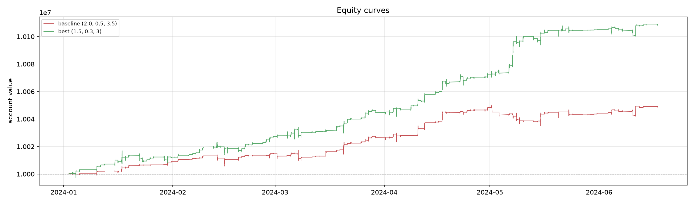

量化投资与资产定价
关注因子构建、组合回测与风险收益归因，强调可复现的研究流程与样本外检验。
关注因子构建、组合回测与风险收益归因，强调可复现的研究流程与样本外检验。
使用协整、OU 过程与滚动估计刻画价差的均值回归特征，研究配对交易的信号与仓位。
关注国债期货、ETF 及其衍生结构的定价、对冲与交易机制。
Python / pandas / statsmodels / backtrader；重视数据口径、无未来函数与回测复算。
以 1 分钟价格为输入，构造 ETF 与国债期货之间的价差，估计 OU 参数并设计三阈值交易规则， 在训练期校准、验证期外推，最终以 backtrader 复算。

研究生入学考试初试总分 420，数学三满分（150 / 150），复试总排名前十。